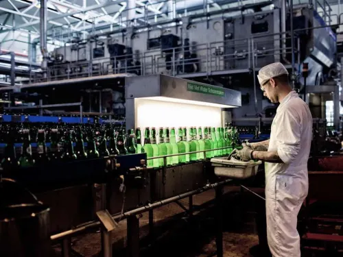
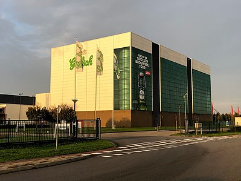
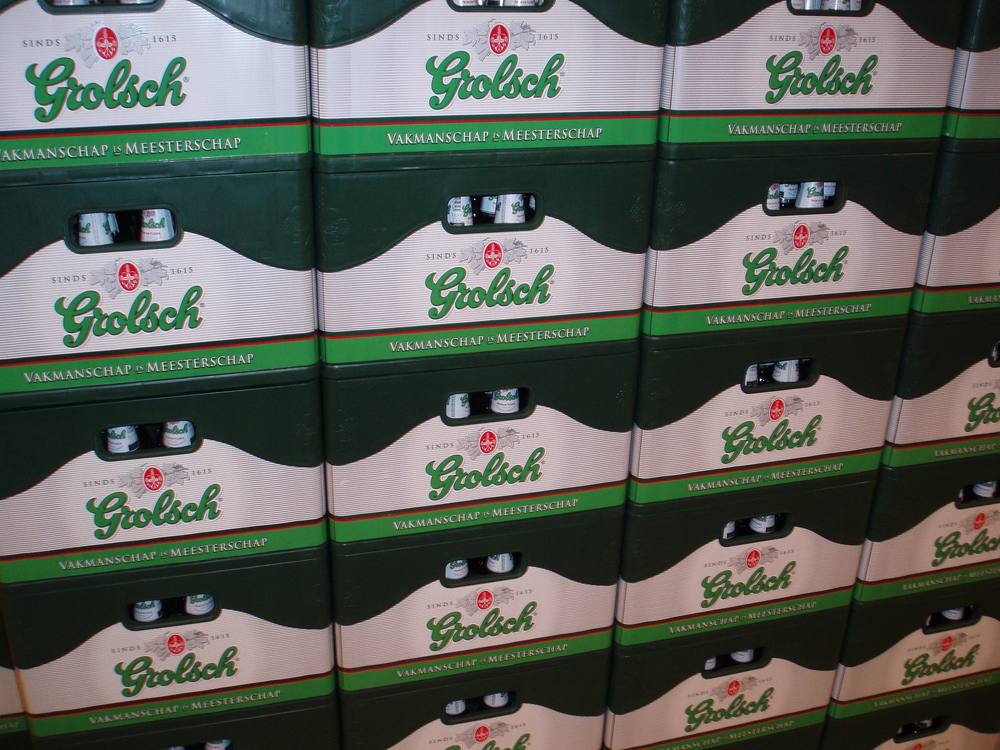

Welkom bij de brouwerij tour van Grolsch!
Home
Galerij
Info
Op deze pagina vindt u beelden van onze brouwerij en overheerlijke bier!
  
Naast smaak en geur is ook het geluid van de Grolsch fles onmiskenbaar!